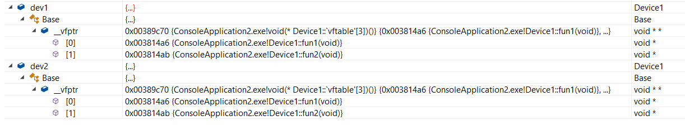
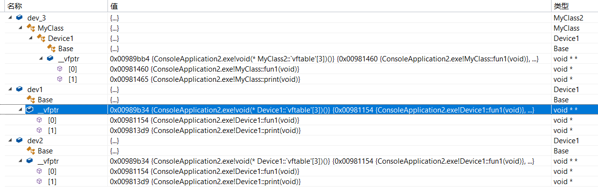

虚函数，是用关键字virtual修饰的类成员函数，但不包括静态函数（static）和构造函数。
内联函数（inline）可以是虚函数。因为内联函数是作用于编译期间，用于通知编译器是否要将内联函数展开。当虚函数标记为内联函数时，假如该函数呈现运行时多态，那么编译器会忽略关键字inline。
1 | class Base{ |
运行上面代码，可以发现，对象dev有一个指针对象__vfptr。

指针对象__vfptr是虚函数指针，类型为void(*)()，它指向对象dev的数组vftable，即虚函数表。
定义另一个Device类对象，可以看到，两个Device类对象的指针对象__vfptr的地址是一样的，这就意味着，Device类的虚函数表全局只有一份，所有Device类对象都会创建一个虚函数指针，并指向它。
在Device类中定义虚函数print，会发现在__vfptr中并没有发现它，但vftable大小+1，派生另一个类，继承于Device类，其__vfptr和vftable跟Device类一样。
这就说明，继承于Base类，但属于其子类的虚函数都会按顺序写入基类的vftable里。（假如有多继承，那属于其子类的虚函数都会按顺序写入第一个基类的vftable里。）
那假如基类并没有虚函数呢？

可以看出，vftable会挂在基类的下一级子类中（或者再下一级）。
其他博客的相关文章：C++中的虚函数(表)实现机制以及用C语言对其进行的模拟实现